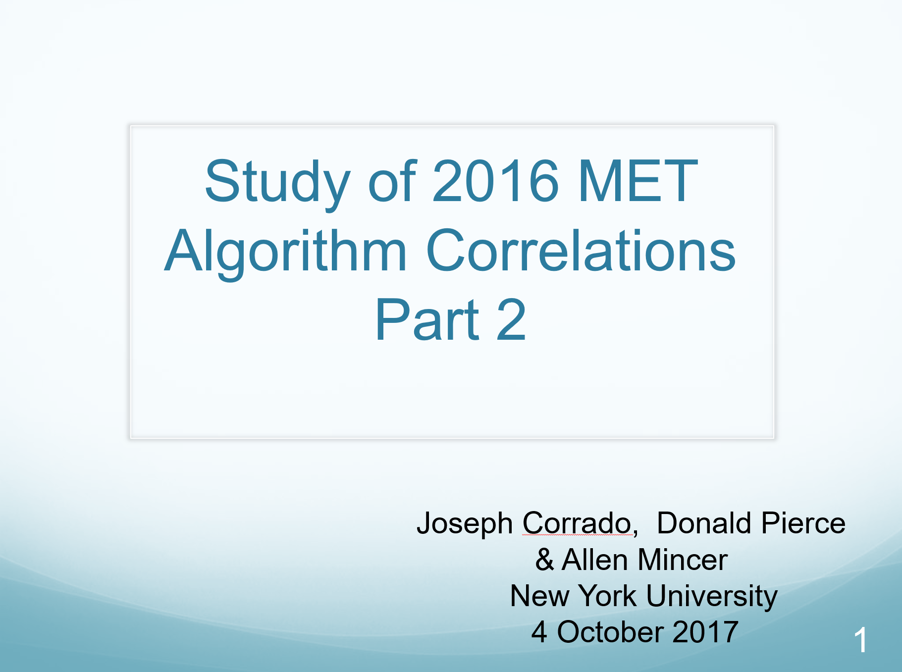
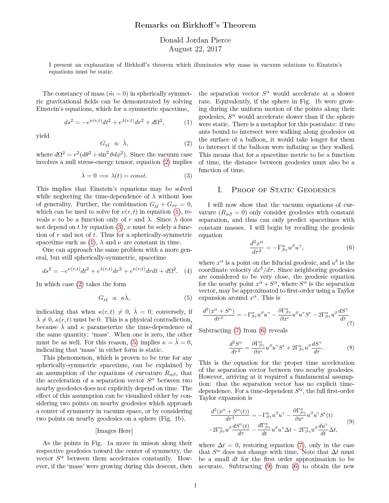
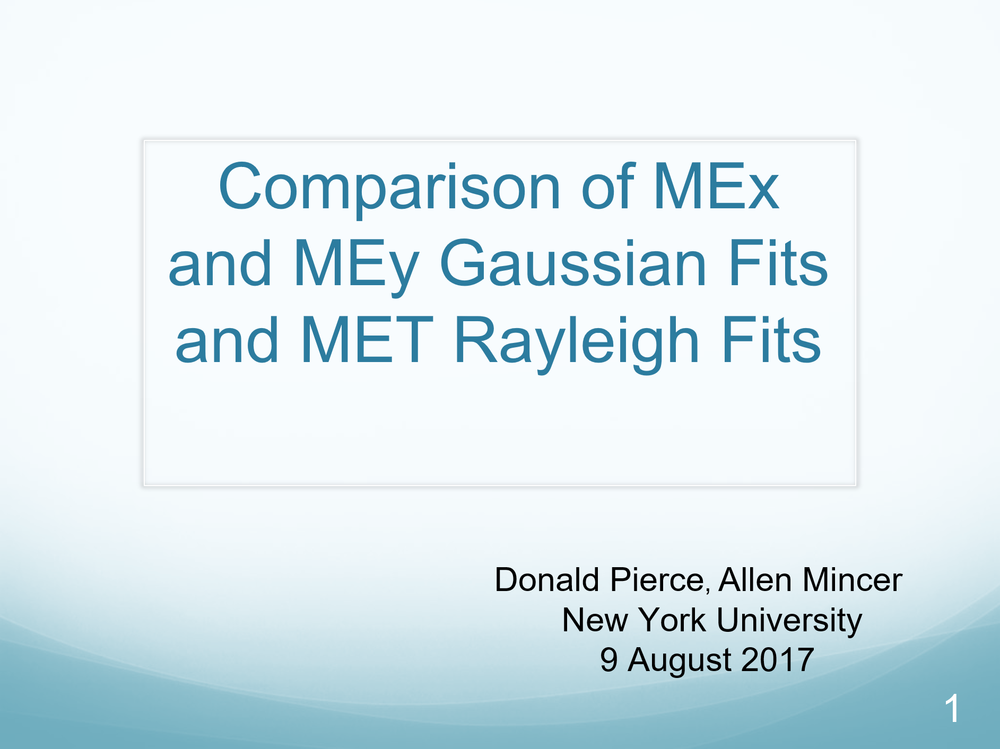
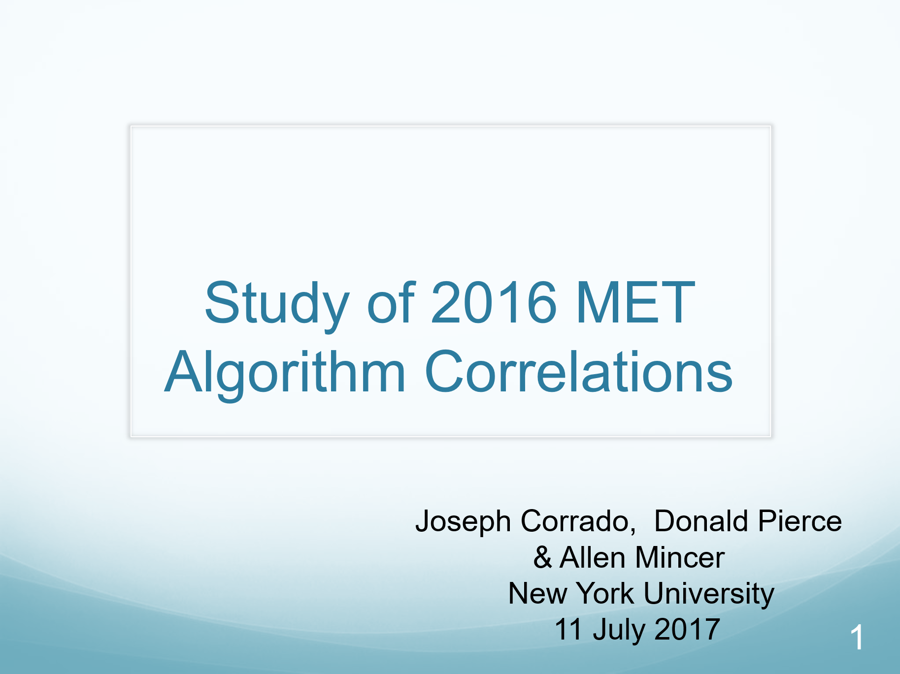
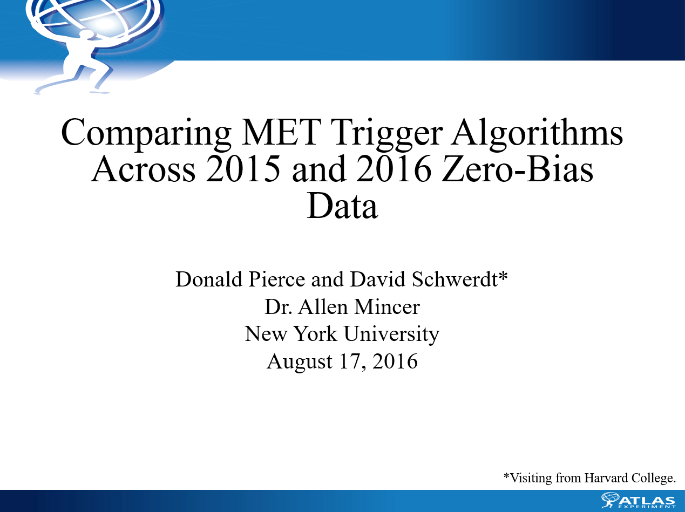

Donald Jordan Pierce
New York University
Undergraduate Research on the ATLAS Experiment
| 2017 | |||

|
November 15, 2017 Study of 2016 MET Correlations Part 3 (12 Slides) Joseph Corrado, Donald Pierce I present an explanation of Birkhoff's thoerem which illuminates why mass in vacuum solutions to Einstein's equations must be static. |
||
|  | October 4, 2017 Study of 2016 MET Correlations Part 2 (19 Slides) Joseph Corrado, Donald Pierce We present results which give evidence that the derived framework for determining the correlation between HLT algorithms is promising. We also test the efficiency newly-constructed HLT algorithms which work in this framework. |
 | August 27, 2017 Remarks on Birkhoff's Theorem Donald Jordan Pierce I present an explanation of Birkhoff's thoerem which illuminates why mass in vacuum solutions to Einstein's equations must be static. |
|  | August 9, 2017 Comparison of METx, METy Gaussian Fits and MET Rayleigh Fits (11 Slides) Donald Jordan Pierce I presented to the MET group results which show the theoretically-predicted consistency between METx,y distributions and the MET distribution. |
 | July 11, 2017 Study of 2016 MET Correlations (55 Slides) Joseph Corrado, Donald Pierce We give an extensive study of the 2016 data, and provide a possible framework for determing the correlation between HTL algorithms. |
| 2016 | |||
|  | August 15, 2016 Comparing MET Trigger Algorithms Accross 2015/2016 Zero-Bias Data (17 Slides) Donald Pierce, David Schwerdt We presented for the first time to the MET group at the ATLAS experiment with results which helped our advisor elicit comparisons between different HLT triggers. |
||
{kind=link}
{kind=link}
{kind=link}
{kind=link}